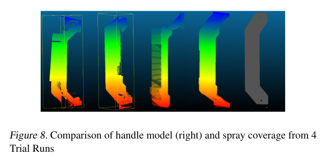

                <div id="corps_central"> 
            
                    <div id="corps_central"> 
                        <h1 style="text-align: center;"><u><b>Evaluation</b></u></h1>
                        <!-- <h1>How Well Does Our System Perform?</h1><p></p> -->


                        <p>
                        We performed a number of tests in simulation to demonstrate Dr.Phil's effectiveness. We also performed basic hardware tests to make sure the simulation is representative and a user study for the app.
                    </p>
                        <h2>SLAM navigation testing</h2>


                        <h2>Door handle recognition</h2>
                        <p>After generating our door handle dataset, we decided to train some different models to test their performance on classification.</p>

                        

                        <p>We initially chose Linear regression and SVM due to their speed and familiarity, which is important as the Raspberry Pi isn't very powerful and the recognition has to be real time. From research papers, we also identified YOLOv3 as a contender. Although YOLOv3 uses neural networks, it's still relatively fast compared to CNNs due to it's implementation.
                        </p>
                        <p>
                            Despite the better recall shown for the Logistic Regression and SVM models, they performed poorly upon classifying doors from afar in implementation testing. This can be attributed to being overfit to the closer samples in our dataset. Thus we chose to opt for the YOLO models as they are less prone to overfitting as shown by adding real world doors samples to the dataset.
                        </p>
                        
                        <p>The main issue with the YOLOv3 model was that the FPS was very low, ~0.5 fps at the same 416x416 resolution, although it had better performance. Even though Tiny-PRN has poor recall on the handle, we realised that lowering the confidence score (the amount of certainty the model has that the door is present) allows us to detect and move to doors more optimistically, and once Dr.Phil gets closer the resolution on the door handle will increase, making it more likely to be detected. In the end, we chose the YOLOv3-Tiny-PRN model as lowering the confidence score partially compensated for the low recall issue.</p>

                          

                            <h2>Spray coverage test</h2>
                        <p>Gazebo doesn't have a "spray" plugin where we can measure the coverage easily. Therefore, we had to use a depth camera on the arm where the nozzle is. The depth camera generates a cloud of points when it hits an object. The camera specification is modified so the view has the same shape as the nozzle spray. We then combine all of the pixels generated over the course of disinfection and compare it to the base handle to get an estimate of the total coverage. We used this estimate to get an idea of the quality of our arm/disinfectant planning.</p>
                        
                        <p>Originally, we didn't have very good results; the simulation showed that the spray only reached 6% of the points we wanted it to, although it has good side and front coverage, as shown above.</p>


                        <h2>User studies</h2>
                        <p>We performed a quick user study on the app. The tests were primarily to make sure that all of the app's functionality was clear, even to first-time users unfamiliar with the system. We also wanted to make sure the app was accessible and visually coherent. As we've only developed an iOS app, half of the testers would be unable to use the app. With this in mind, we created a google form which showcased the main app activites.</p>

                        


                        </div>	
            </div>

